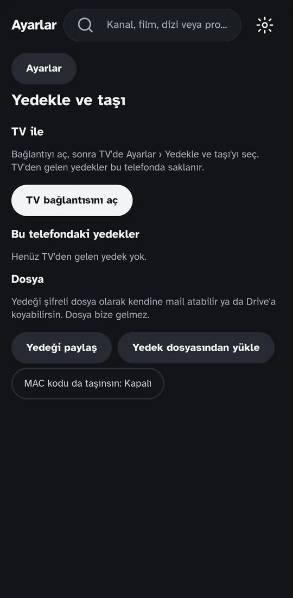
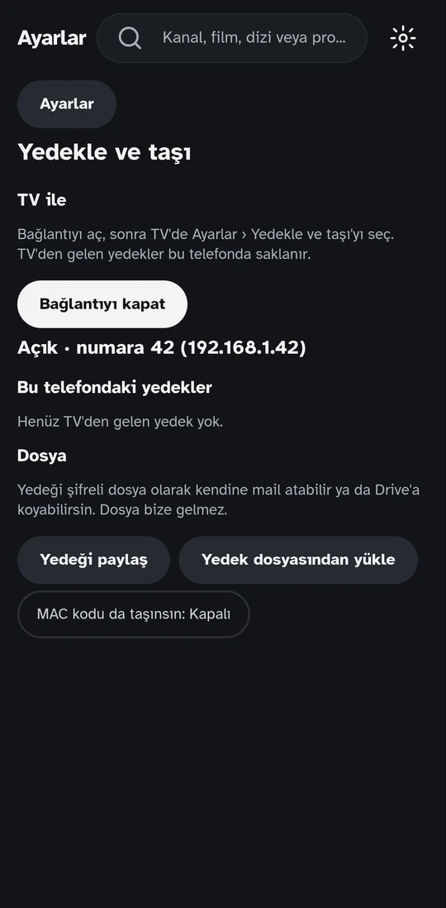
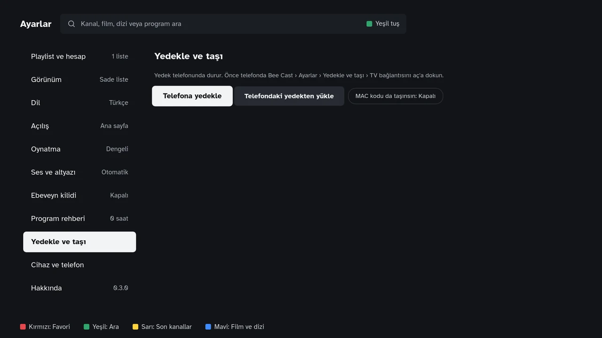
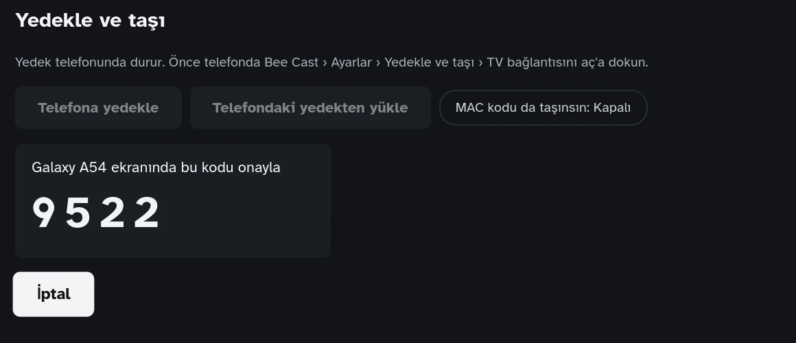
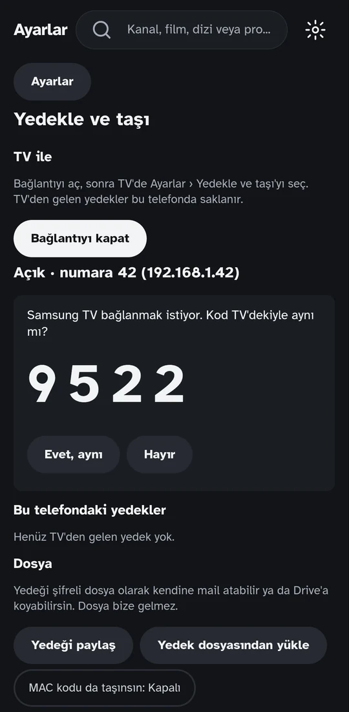
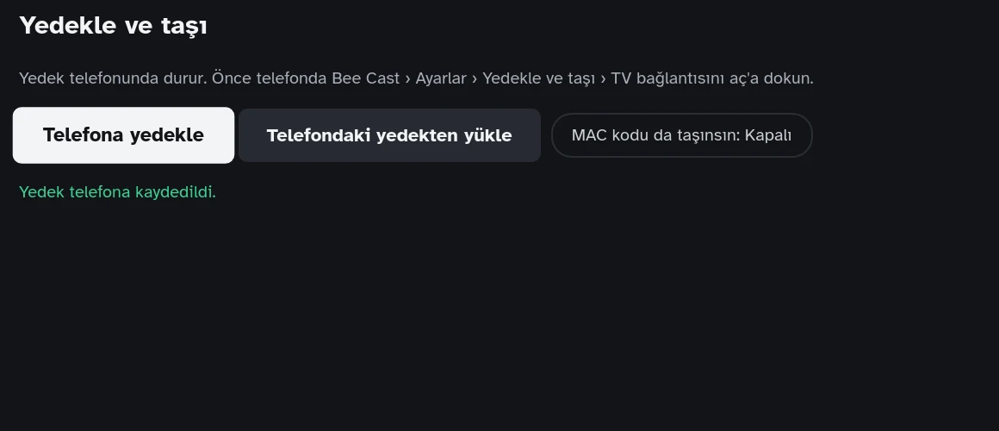
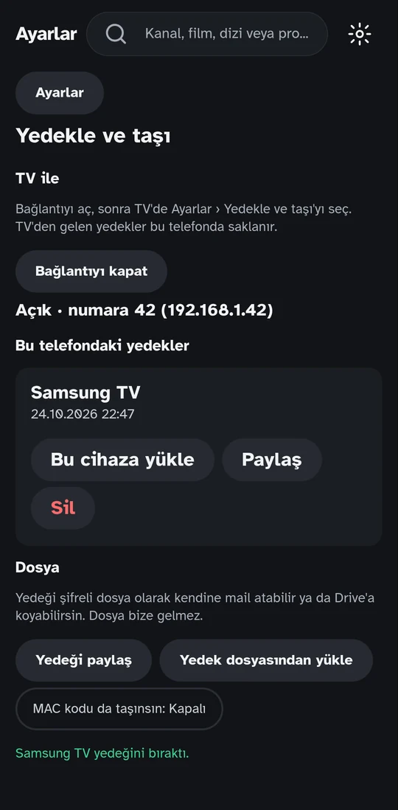
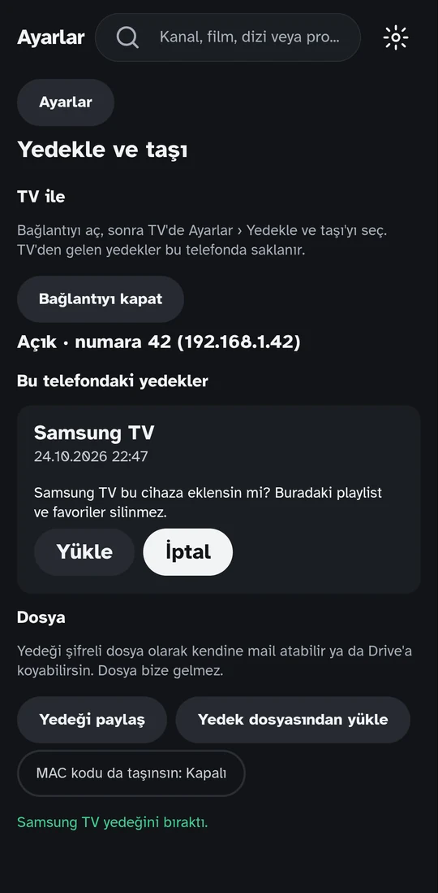
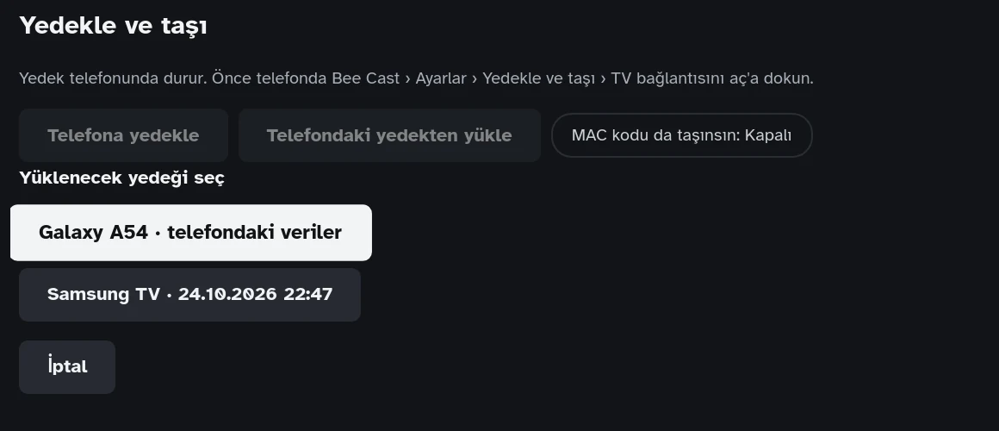
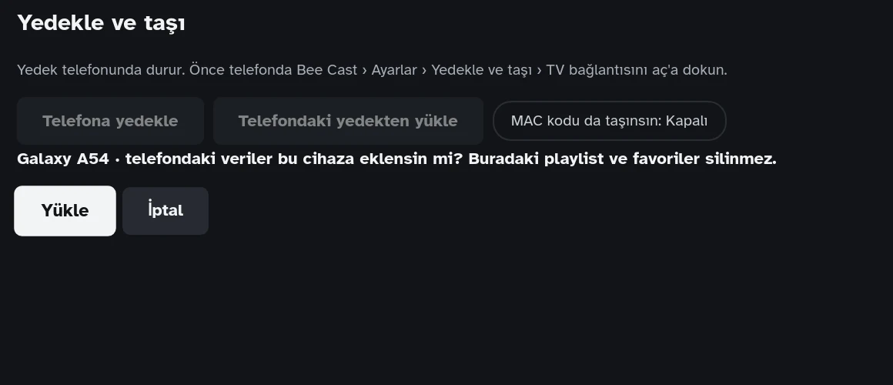

Yardım
Başlamadan önce
Gerekenler
- Telefon ve TV aynı ev ağında olmalı. İkisi de aynı modeme bağlı olsun. Misafir ağı (guest) kullanma; misafir ağında cihazlar birbirini görmez.
- İkisinde de Bee Cast kurulu olmalı. Telefonda Android sürümü gerekir.
- Telefonda Cihazlarım ekranı açık kalmalı. Telefon bağlantıyı yalnız bu ekran açıkken kabul eder. Ekrandan çıkarsan ya da 5 dakika işlem olmazsa bağlantı kapanır.
- Android 17 ve sonrası: telefon "yerel ağ" izni ister. İzin vermezsen TV telefonu bulamaz.
Taşınanlar: playlist bilgilerin (şifreleriyle), favorilerin, izleme geçmişin ve kaldığın yerler, ayarların, son aramaların. Kanal ve film listeleri taşınmaz; yeni cihaz bunları sağlayıcından yeniden indirir. MAC cihaz kodu yalnız "MAC kodu da taşınsın" açıksa taşınır.
Yükleme birleştirir, silmez: cihazda olan playlist ve favoriler yerinde kalır, yenileri eklenir.
TV'deki listeni telefona al
TV yedeğini telefona bırakır, sonra telefon bu yedeği kendine yükler.
-
Telefonda bağlantıyı aç
Bee Cast'i aç, sağ üstteki dişliye (Ayarlar) dokun, Cihazlarım'yı seç. Bağlantıyı aç'a dokun.
Altında "Açık · numara …" yazar. Bu numarayı not et; TV telefonu bulamazsa kumandayla yazacaksın.

Önce 
Bağlantı açık -
TV'de Telefona yedekle
Kumandayla Ayarlar › Cihazlarım'ya gel, Telefona yedekle'ye bas. TV evdeki ağda telefonu arar; telefon açıksa genelde 2 saniye içinde bulur.
Telefonu bulamazsa (yaklaşık 6 saniye sonra) telefondaki numarayı yazmanı ister. Numarayı yaz, Bağlan'a bas.

Ayarlar › Cihazlarım -
Kodu karşılaştır ve onayla
TV'de 4 haneli bir kod çıkar. Aynı kod telefonda da görünür ve "… bağlanmak istiyor. Kod TV'dekiyle aynı mı?" diye sorar.
Kodlar aynıysa telefonda Evet, aynı'ya dokun. Farklıysa Hayır de; bu, bağlanmaya çalışan cihazın senin TV'n olmadığı anlamına gelir.

TV 
Telefon -
Yedek telefona gelir
TV "Yedek telefona kaydedildi" der. Telefonda Bu telefondaki yedekler altında TV'nin adı ve tarih görünür.

TV 
Telefon -
Telefona yükle
Yedeğin altındaki Bu cihaza yükle'ye dokun. Telefon "… bu cihaza eklensin mi? Buradaki playlist ve favoriler silinmez." diye sorar; Yükle'ye dokun.
Telefon kaç playlist, favori ve izleme kaydı eklediğini yazar ve yeniden açılır. Listeler sağlayıcından indirilir; büyük listelerde bu biraz sürer.

Telefondaki yedeği TV'ye yükle
Yeni bir TV'ye listeni kumandayla tek tek yazmadan girmek için. Telefonda Bee Cast'te playlist varsa ya da telefona daha önce bir TV'nin yedeği geldiyse kullanılabilir.
-
Telefonda bağlantıyı aç
Ayarlar › Cihazlarım › Bağlantıyı aç (yukarıdaki 1. adım).
-
TV'de Telefondaki yedekten yükle
TV'de Ayarlar › Cihazlarım › Telefondaki yedekten yükle'ye bas. Kod çıkınca telefonda Evet, aynı'ya dokun.
-
Yedeği seç
TV telefondaki yedekleri listeler. "telefonun adı · telefondaki veriler" telefonun kendi listesidir; altındakiler telefona daha önce TV'lerden gelen yedeklerdir.

-
Onayla
TV "… bu cihaza eklensin mi? Buradaki playlist ve favoriler silinmez." diye sorar. Yükle'ye bas. TV eklediklerini yazar ve uygulamayı yeniden açar.

Bir TV'den öbür TV'ye taşı
Telefon arada taşıyıcıdır; iki TV'nin aynı anda açık olması gerekmez.
- Eski TV'de: TV'deki listeni telefona al bölümünün 1–4. adımları (telefona yükleme adımı gerekmez).
- Yeni TV'de: Telefondaki yedeği TV'ye yükle; listede eski TV'nin yedeğini seç.
Telefon her TV'nin en fazla son 3 yedeğini saklar. Gerek kalmayanları telefonda Sil ile kaldırabilirsin.
Telefondan tablete (ya da öbür telefona)
İki cihaz aynı Wi-Fi ağında olmalı.
- Listenin olduğu cihazda: Ayarlar › Cihazlarım › Bağlantıyı aç.
- Yeni cihazda: Ayarlar › Cihazlarım › Başka cihazdan yükle. Cihaz bulunamazsa öbür cihazda görünen numarayı yaz.
- İki ekranda aynı kod görünür; listenin olduğu cihazda Evet, aynı'ya dokun.
- Yeni cihazda yüklenecek veriyi seç ve Yükle'ye dokun.
Google Drive ile yeni cihaza
Aynı Wi-Fi gerekmez. Senkron izleme yerini ve favorileri taşır; playlistler için Drive'a şifreli bir yedek konur.
- Listenin olduğu cihazda: Ayarlar › Cihazlarım › Google Drive'a bağlan, ekrandaki kodu Google hesabında onayla.
- Aynı yerde Drive'a yedekle: bir yedek şifresi yaz (en az 6 karakter) ve tekrarla. Şifreyi unutursan yedek açılmaz, biz de açamayız.
- Yeni cihazda ilk açılışta Başka cihazımdan al'ı seç (ya da Ayarlar › Cihazlarım) ve Google Drive'a bağlan.
- Uygulama yedeği bulur ve şifreyi sorar. Şifreyi yazınca playlistler gelir, senkron da kendiliğinden açılır.
Yedek dosyası (telefon, tablet, bilgisayar)
Ağ gerekmeden saklamak ya da başka bir telefona geçmek için. TV dosya ile çalışmaz; TV için yukarıdaki yolları kullan.
- Ayarlar › Cihazlarım › Yedeği paylaş (bilgisayarda Yedeği dosyaya kaydet).
- Bir yedek şifresi yaz (en az 6 karakter) ve tekrarla. Dosyada playlist şifrelerin de var; bu şifre olmadan dosya açılmaz. Şifreyi unutursan yedek açılmaz, biz de açamayız.
- Dosyayı kendine mail at ya da Drive'a koy. Dosya bize gelmez.
- Yeni cihazda: Yedek dosyasından yükle › Dosya seç › şifreyi yaz.
Olmuyorsa
- TV "Telefon bulunamadı" diyor.
- Telefonda Cihazlarım ekranının açık ve "Açık · numara …" yazdığına bak. Telefondaki numarayı TV'ye yaz. Hâlâ olmuyorsa ikisinin aynı Wi-Fi'da olduğunu kontrol et (misafir ağı değil).
- "Telefona ulaşılamadı."
- Telefon ekranı kapanmış ya da başka bir uygulamaya geçilmiş olabilir. Telefonda Bee Cast'i Cihazlarım ekranında aç ve yeniden dene.
- "Bağlantının süresi doldu."
- 5 dakika işlem olmadı. TV'de yeniden başlat; telefonda bağlantı kapandıysa yeniden aç.
- "Yerel ağ izni verilmedi."
- Telefonun Ayarlar › Uygulamalar › Bee Cast › İzinler bölümünden yerel ağ iznini aç.
- Kodlar farklı.
- Telefonda Hayır de. Evde başka bir TV aynı anda bağlanmaya çalışıyor olabilir; işlemi doğru TV'den yeniden başlat.
Bunlar işe yaramadıysa televizyonunun modelini, uygulama sürümünü (Ayarlar › Hakkında) ve ekranda yazanı ekleyerek yaz.
ahmetunaluzun@gmail.comGüvenli mi?
- Telefon bağlantıyı yalnız Cihazlarım ekranı açıkken kabul eder; ekrandan çıkınca kapanır.
- Hiçbir şey kod telefonda onaylanmadan aktarılmaz. Kodlar aynıysa araya başka cihaz girmemiştir.
- Aktarılan veri şifrelidir ve yalnız evindeki ağda gider; internete ya da bize hiçbir şey gönderilmez.
Sürüm geçmişi
| Sürüm | Tarih | Değişen alan | Eski değer | Yeni değer | Neden |
|---|---|---|---|---|---|
| 1.1.0 | 26.10.2026 | Bölüm adı; yeni tarifler | Ayarlar › Yedekle ve taşı; yalnız TV ↔ telefon ve dosya | Ayarlar › Cihazlarım; telefondan tablete ve Google Drive ile yeni cihaza tarifleri | Uygulamada bölüm adı değişti; yeni özellikler |
| 1.0.0 | 24.10.2026 | Sayfanın tamamı | — | İlk yayın: yedekle ve taşı tarifleri | Yeni özellik |